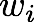
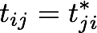
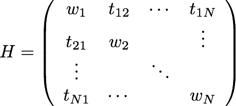

Hückler is a simple web utility, which finds the eigenvalues and eigenfunctions for simple Hückel models, and presents them graphically.
Hückel models are simple chemistry models for molecules, which compleltely ignore electron-electron interactions. In physics lingo, a Hückel model is a non-interacting tight-binding model, and for mathematicians a Hückel model is an undirected graph where nodes and links can have unequal weights.
The weight of a node i is denoted , while the link connecting node i and j is given by the weight . The Hamiltonian (adjancency matrix) of a given Hückel model is then the matrix:
.
Hückler diagonalizes this matrix and presents the eigenfunctions graphically. Because the weights of all links and nodes are real, the eigenfunctions and eigenvalues are also real. For Hückel molecules the eigenfunctions are also known as the molecular orbitals, while the eigenvalues are the eigenenergies.
Wikipedia also have some articles about Hückel theory and graph theory, which you can study further.
The Hückel method solver is built to be flexible. If you instead would prefer a more chemistry oriented application, which allow for choosing hetero-atoms, and which draws all auxiliary atoms, you could try out the free hülis program.
Recommendations for further improvements can be submitted to our UserVoice forum.